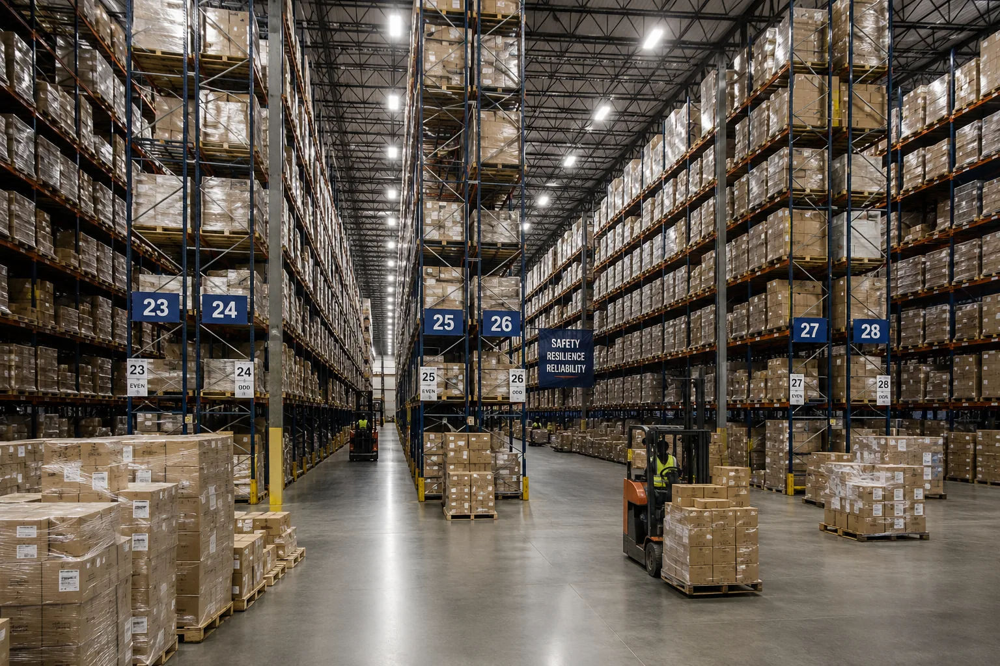

The World Economy Is Becoming More Expensive on Purpose
Governments and companies spent decades cutting inventory, concentrating suppliers and chasing the lowest possible cost. Now they are paying for backup factories, alternate shipping routes and production capacity they hope they will never fully need.

The new transformer plant outside Brno is capable of producing more equipment than its owners expect to sell in a normal year.
That is not an accident in the forecast. It is part of the business plan.
The plant was financed on the assumption that Europe's electrical grid will continue replacing aging hardware, expanding transmission and connecting new generation. Its owners also wanted something less conventional: spare production capacity that can be activated when another supplier is disrupted.
Ten years ago, unused factory capacity would have been presented as a problem to fix. Today, manufacturers in several industries are beginning to describe it as insurance.
The shift is showing up across semiconductors, pharmaceuticals, batteries, electrical equipment, food processing, defense manufacturing and critical minerals. Companies are qualifying second suppliers even when the first one is cheaper. Governments are subsidizing domestic plants that may never match the operating costs of established overseas competitors. Warehouses are carrying inventories that finance departments once worked aggressively to shrink.
The global economy is still deeply dependent on trade. What is changing is how much companies are willing to spend to keep one broken link from stopping everything behind it.
The old model rewarded concentration
For most multinational companies, the logic of the previous era was difficult to argue with.
If one supplier could make a component more cheaply and consistently than three smaller suppliers, purchasing more from the best one lowered costs. If inventory spent six weeks sitting in a warehouse, reducing that inventory freed cash. If a factory could be located near an established supplier network, there was little reason to reproduce the same network somewhere more expensive.
Those decisions produced enormous gains in efficiency.
They also produced systems in which a surprisingly small number of facilities could interrupt a surprisingly large amount of economic activity.
The vulnerability was often invisible during ordinary years. A port loaded containers. A chemical plant produced the same precursor it had produced for decades. A handful of semiconductor fabs supplied chips that disappeared into thousands of products. Companies judged their supply chains by price, quality and delivery performance because those were the problems they encountered most often.
The last several years added another question: what happens when the supplier is good, the contract is valid and the product still cannot arrive?
Factories built for the bad year
The answer has been expensive.
New semiconductor plants are being built in countries where labor, construction and regulatory costs are higher than in the established manufacturing centers they are meant to supplement. Pharmaceutical companies are adding domestic production for ingredients that can still be purchased more cheaply abroad. Utilities are signing longer contracts for transformers and switchgear because replacement times became too unpredictable.
Some of the new plants will spend much of their lives operating below theoretical capacity.
That would have been difficult to defend when corporate planning assumed a stable flow of goods. It is easier to defend when executives can point to years in which a missing chip stopped a vehicle line, a shipping disruption delayed industrial equipment or a shortage of one chemical ingredient constrained an entire category of medicine.
Companies are effectively buying an option. They pay more every year so that, during a disruption, they have another place to go.
The second supplier is rarely the cheapest
Redundancy sounds simple until a purchasing department tries to build it.
A second supplier has to be audited, tested and qualified. Its components may require different tooling or software. It may use a different shipping route, currency or regulatory system. Engineers have to make sure the substitute can actually be used when the first supplier is unavailable.
Maintaining that relationship also requires orders.
A company cannot tell a backup factory to wait indefinitely with idle workers and equipment, then expect immediate production when a crisis arrives. In practice, many firms divide ordinary purchases between suppliers so both remain viable.
The cheaper supplier consequently receives less volume. The more expensive supplier receives business it would not have won on price alone. The average cost rises.
The extra cost appears every quarter. The financial benefit may remain invisible for years, until a disruption makes the alternate source valuable.
Governments are paying for capabilities, not just products
Public policy has accelerated the shift.
Industrial subsidies increasingly target the ability to produce something inside a country or allied group of countries, even when importing the same product would cost less in a normal market.
Semiconductors are the most visible example, but the same thinking is spreading to batteries, grid equipment, medical supplies, rare-earth processing and defense components.
In many cases, the subsidy helps keep factories, trained workers and supplier networks available even when current demand alone would not support them.
That can produce awkward economics.
A subsidized plant may create jobs and reduce exposure to foreign supply while also producing a component at a higher cost than the existing market leader. Taxpayers help finance the plant. Consumers may pay somewhat more for the finished product. The payoff is measured partly in an event that might not happen.
The argument resembles defense spending more than traditional trade policy: capability has value even when it spends long periods unused.
Inventory is making a comeback
Warehouses are changing too.
Companies spent decades refining just-in-time systems that reduced the amount of material sitting between production steps. When transportation was reliable and suppliers predictable, carrying less inventory made businesses faster and more profitable.
Some manufacturers are now rebuilding strategic stockpiles for the components that are hardest to replace.
They are not filling warehouses indiscriminately. Cheap, common parts can still be ordered as needed. The attention is going to items with long manufacturing times, concentrated suppliers or unusually large consequences if they are missing.
An industrial pump may contain hundreds of components, but one specialized controller can determine whether the pump ships on time. A hospital can have thousands of supplies on hand and still face trouble if one critical sterile component disappears from the market.
Stockpiling those bottleneck items ties up capital and creates storage costs. It also gives companies something they did not have when every part of the system was optimized around average conditions: time.
Trade is being reorganized more than reversed
The language surrounding the shift can make it sound as though globalization is ending.
The trade data tell a more complicated story.
Companies still depend on international suppliers because no large economy can efficiently reproduce every part of a modern industrial system at home. Electronics, chemicals, machine tools, minerals, food, energy and manufactured goods continue crossing borders at enormous scale.
What is changing is the map.
A company that once bought almost everything from one country may now split orders among several. A supplier located closer to the customer can win business despite charging more. Firms are paying attention to whether two nominally independent suppliers depend on the same upstream factory, port or raw material.
None of this makes a country self-sufficient. It gives companies more alternate routes when one part of the network fails.
There is a price for all of this
Consumers eventually encounter part of the bill.
Two qualified suppliers cost more than one optimized supplier. Strategic inventories cost more than empty warehouses. Domestic plants can require subsidies. Smaller production runs are usually less efficient than concentrating volume at the lowest-cost facility.
Those costs do not appear as a single resilience surcharge on a receipt. They are distributed through prices, taxes, corporate margins and government budgets.
For years, economists worried primarily about the cost of disruptions themselves. Businesses are now paying more attention to the cost of avoiding the worst of them.
That can make the economy look less efficient on paper during calm periods.
It may also make the next interruption less dramatic.
The difficult part is knowing how much backup is enough
Resilience has the same problem as insurance: nearly every additional layer can be justified by imagining a bad enough event.
A second supplier reduces one risk. A third reduces another. More inventory buys more time. Another domestic factory creates another fallback.
At some point, the cost of preparing for disruption can exceed the damage a likely disruption would cause.
Companies are trying to find that line without much historical guidance. The supply chain that looks dangerously concentrated in one industry may be perfectly reasonable in another. A component with six suppliers can still be vulnerable if all six rely on one material. A factory on another continent may provide better redundancy than a second plant located down the road from the first.
The useful question is becoming more specific than whether something is made domestically or abroad. Executives increasingly want to know how many independent paths lead from raw material to finished product, and how quickly one path can replace another.
A less elegant economy
The system taking shape is messier than the one companies spent decades building.
There will be duplicated factories, partially filled warehouses and suppliers retained because they are geographically useful rather than economically dominant. Some investments will look wasteful for years. A few may turn out to have been unnecessary.
The economic logic is nevertheless becoming easier to recognize.
The cheapest supply chain works best when the world behaves as expected. Companies and governments are increasingly paying for one that can keep working when it does not.